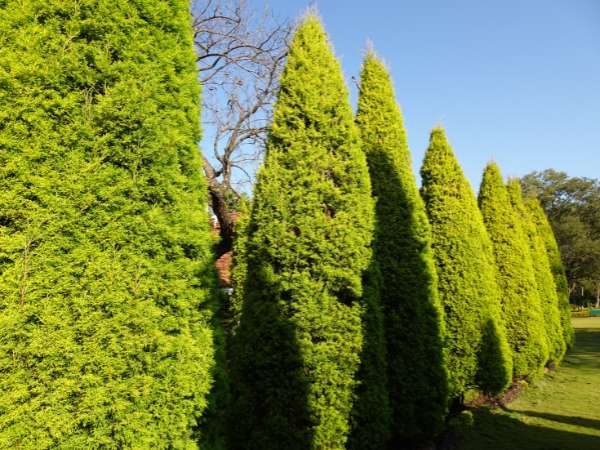

Thuja occidentalis
Common Names: Thuja, Eastern Arborvitae, White Cedar, Tree of Life
Local Name: Thuja (Tamil/Hindi)
Family: Cupressaceae
Origin: Eastern North America
Plant Type: Evergreen coniferous tree or shrub
Average Lifespan: 100–800 years in the wild; decades in cultivation
| Growth Habit | Pyramidal to columnar evergreen; dense branching with flat sprays of foliage |
| Plant Size | 2–20 meters tall depending on variety; dwarf cultivars 1–2 meters |
| Leaves | Scale-like, overlapping, bright green to yellow-green; aromatic when crushed; arranged in flat sprays |
| Flowers | Tiny, inconspicuous; male cones yellow, female cones small and green |
| Root System | Shallow, fibrous; can be surface-rooting; sensitive to drought |
| Climate | Temperate to subtropical; prefers cooler conditions; adapts to tropical highlands |
| Temperature Range | -30°C to 35°C; very cold-hardy; struggles in extreme tropical heat |
| Soil Type | Moist, well-drained loamy soil; tolerates clay |
| Soil pH Preference | 6.0–8.0 |
| Sun Requirement | Full sun to partial shade |
| Spacing | 60–90 cm for hedges; 2–3 meters for specimen trees |
| Water Requirement | Moderate; consistent moisture especially when young |
| Can it Grow in Pots? | Yes, dwarf varieties in large containers |
| Fertilizer Schedule | Once or twice a year with balanced slow-release fertilizer |
| Recommended Organic Fertilizers | Compost, well-rotted manure |
| Mulching Practice | Mulch around base to retain moisture and protect shallow roots |
| Common Pests | Bagworms, spider mites, scale insects |
| Common Diseases | Root rot, tip blight, canker diseases |
| Pruning Time | Late spring or early summer; avoid cutting into old brown wood |
| How to Prune | Shear lightly to maintain shape; never cut back to bare wood |
| Propagation by Cuttings | Semi-hardwood cuttings in autumn; root in 6–8 weeks with rooting hormone |
| Propagation by Seeds | Seeds require cold stratification; germinate in spring |
| Market Uses | Privacy hedge, windbreak, ornamental specimen, topiary |
| Market Value (Approx.) | ₹200–1,000 per plant depending on size |
| Symbolism | Called "Arborvitae" (Tree of Life) by French explorers; used by Native Americans for medicinal purposes |
| Traditional Uses | Wood used for canoes and fencing; foliage used in traditional medicine; widely planted as cemetery and memorial tree |
Add your field observations here.